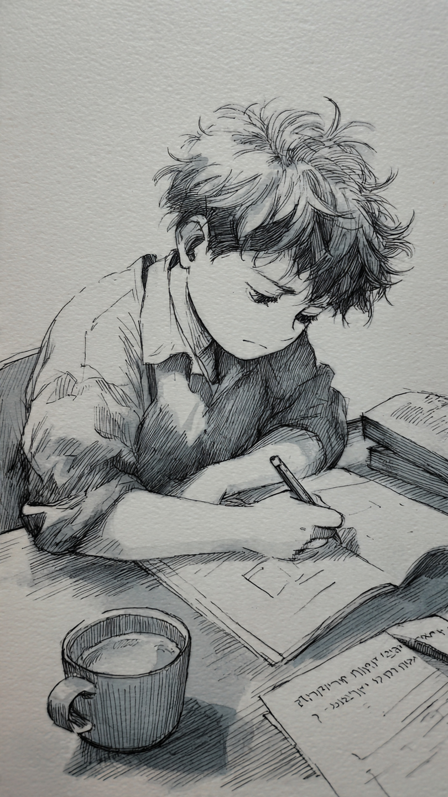

O estudo do Hebraico é indispensável para o entendimento profundo das Escrituras Sagradas. Conhecer as palavras originais não apenas facilita a compreensão intelectual, como enriquece o espírito através da genuína interpretação pelas vias da língua em que a revelação foi escrita.
Em segundo lugar, surpreenda-se pela simplicidade e facilidade de se aprender um idioma tão especial e tão caro para a história bíblica. O Hebraico Médio possui uma lógica estrutural que, uma vez compreendida, abre portas para um tesouro literário milenar.
Além disso, o Hebraico nos permite acessar a cosmovisão semita. Muitas expressões teológicas perdem sua força em traduções latinas; no original, elas recuperam sua cor, peso e urgência. Estudar esta língua é, acima de tudo, um ato de respeito e zelo pela Palavra de Deus.